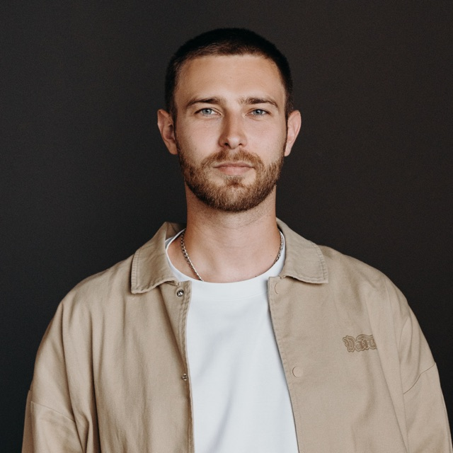

Modern Robotics и Physical AI
Курс о том, как устроены современные роботы: от классического управления и behavior cloning до VLA-моделей и гуманоидов. Каждую тему сопровождают лабораторные работы в браузере, где небольшие нейросети обучаются за несколько секунд.
Как устроен урок
Урок занимает 30–45 минут и посвящён одной идее. Он начинается с задачи, которую не решили предыдущие методы, затем разбирает идею и ключевую статью, а потом даёт проверить всё на практике.
Теория в два уровня
Основной текст опирается на интуицию и схемы. Формулы, размерности и код вынесены в раскрывающиеся блоки.
Лабораторные работы
Эксперименты с небольшими моделями прямо на странице. Перед запуском ты делаешь прогноз, после — сравниваешь его с результатом.
Работа со статьями
Каждый урок опирается на одну-две ключевые работы. К ним есть путеводитель: что читать внимательно, а что можно пропустить.
Проверка понимания
Тест с разбором ответов и открытые вопросы с эталонными решениями.
Программа
9 частей, 54 урока. Части идут в логическом порядке: каждая отвечает на ограничения подходов из предыдущей. 34 урока составляют ядро курса, остальные 20 — углубления по отдельным темам.
Термины из уроков с короткими определениями собраны в глоссарии курса.
Отметки «пройден» и «начат» хранятся только в этом браузере.
Для кого этот курс
Курс рассчитан на инженеров с опытом в одной из двух областей. Нужны Python и базовые знания машинного обучения. Трансформеры, диффузионные модели и основы теории управления разобраны внутри курса.
ML-инженерам, которые переходят в робототехнику
- кинематика, управление и планирование в объёме, нужном для работы с обучаемыми моделями
- особенности данных в робототехнике и способы их сбора
- задачи, в которых классические методы по-прежнему работают лучше нейросетей
Робототехникам, которые осваивают машинное обучение
- последовательный путь от behavior cloning до VLA и моделей мира
- устройство π0, GR00T и Gemini Robotics
- способы совмещать обучаемые модели с классическим стеком
Результаты обучения
Разбирать архитектуру, данные и ограничения новых статей по robot learning.
Выбирать между обучаемыми, классическими и гибридными решениями и обосновывать выбор.
Оценивать, сколько нужно телеоперации, симуляции и видео людей и как выстроить маховик данных.
Отличать демонстрацию от готового продукта и понимать стратегии компаний.

Олег Шипитько
Больше десяти лет занимаюсь робототехникой. Этот курс — то, что мне хотелось бы прочитать самому, когда нейросети пришли в роботов.